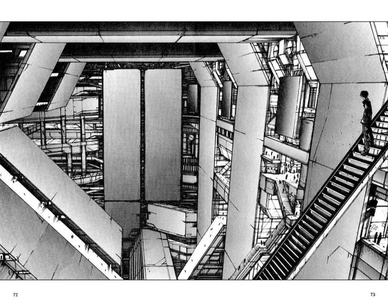

AASDJASKJDHASJKDHASKJDHAKSJDHNAKDSASKLDJHAUSKDYHASKJDHKJASDSD

In this world, is the destiny of mankind controlled by some transcendental entity or law? Is it like the hand of God hovering above? At least it is true that man has no control; even over his own will.
AASDJASKJDHASJKDHASKJDHAKSJDHNAKDSASKLDJHAUSKDYHASKJDHKJASDSD
Texto que iría sobre la imagen de abajo. Nulla dignissim ex sed dolor cursus tristique. Ut et magna vitae mi porttitor pulvinar. Morbi auctor auctor sapien, sed mattis purus posuere non. Nam in risus est. Pellentesque efficitur id lectus sed tincidunt. Proin imperdiet metus a leo sodales mollis.
Panel random de BLAME 1.